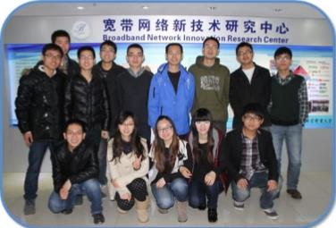

光交换网络研究室
一 研究室负责人介绍
王宏祥： 男，博士，副教授，IEEE Member。教育部科学进步技术奖一等奖、教育部自然科学奖二等奖获得者。作为项目负责人和主研人先后参与了多项国家973计划、863计划、国家自然基金等研究项目，在业务驱动的光互联网络、光突发交换网络、高速光纤通信系统等方面取得了多项研究成果，在IEEE国际期刊和OFC、ICC、OECC等轨迹会议上发表学术论文50余篇，多篇文章被SCI和EI检索，已经获得国家发明专利授权7项，合作出版专著1篇。
主要研究方向： 光交换网络
二 研究室成员
组长：文花顺
成员：秦军、杨锐、周芸、许壮壮、熊文凯、郭鹏飞、邝继欧、尚智婕、乔迪、杨烨、夏青、柴丹丹、梁洋洋、王骋、吴娟
